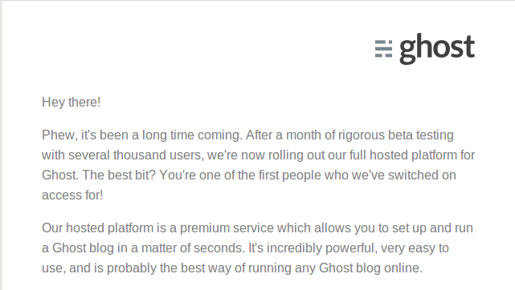

Ghost.org开启博客托管服务
晚上Gmail里出现了Ghost 的邮件，说Ghost已经开启了博客托管服务，而我呢，“很荣幸”地成为了第一批有权限使用这个服务的人之一。

上面还自我吹嘘说：
Our hosted platform is a premium service which allows you to set up and run a Ghost blog in a matter of seconds. It's incredibly powerful, very easy to use, and is probably the best way of running any Ghost blog online.
那就去看一看吧，如果用起来顺手的话可以考虑把放到Github上的博客转移过去呢——毕竟从上次自己在本地部署的Ghost使用体验来看，Ghost确实是一个风格简洁又不失美观的博客平台。
结果呢，使用这个服务是需要付费的，最低的5美刀一月，只能建一个博客，每月10000次访问量上限(抱歉因为之后点击了试用结果无法再看到这个界面了，只能凭记忆描述了)，其他更高资费的当然是拥有更高的访问量上限和博客上限啦。
而且呢，主题也是需要付费了的哟，看看，这价钱不错哦～～功底不错的Web前端可以考虑为Ghost写主题卖钱什么的，就是不知道Ghost要拿多少成的利润啊。
还好还有一个免费试用30天的服务，于是果断点击试用啊。获得了试用权限后，新建博客啊果然是很轻松的，这一点倒没说大话。
总之……土豪们可以入手哟……我就算了，继续在github上死皮赖脸地混着。
嘛，这里 是我试用时建立的博客，权当demo而已。当然如果您在1月16号之后看到这篇文章，就没有必要点刚才的链接啦。